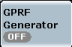
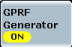
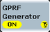

A generator can be in the "ON" or "OFF" state. In the default configuration, the generator is switched off. No output signal is available. The generator state is shown in the generator control softkey.

To turn the generator on or off:
Select the generator control softkey and press ON | OFF.
Alternatively, right-click the generator control softkey. Click ON or OFF.
Wait until the control softkey indicates the "ON" state:

Depending on the configuration, the R&S CMW requires some time to provide the generator signal. The ARB generator signal for example is available only after a waveform file has been loaded:  While the generator is turned on but still waiting for resource allocation, adjustment or hardware switching, a yellow sandglass symbol in the generator control softkey indicates the "pending" state.  The yellow symbol disappears when the generator signal is available. The "pending" state is also indicated while the generator is turned off but the resources have not yet been released. |